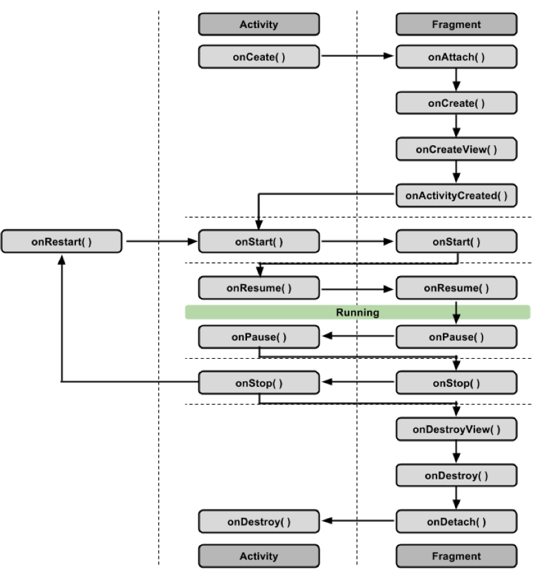
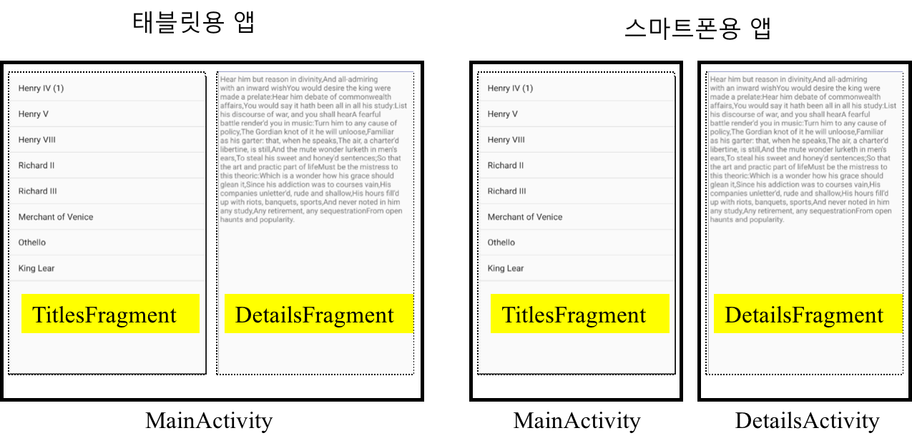
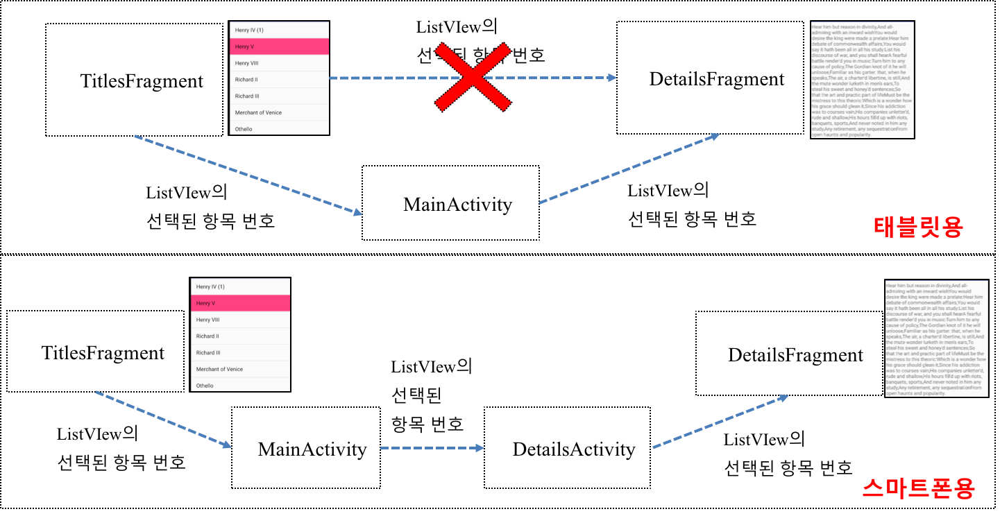
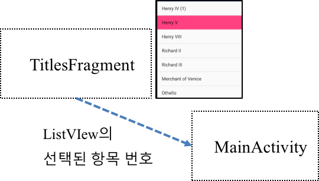
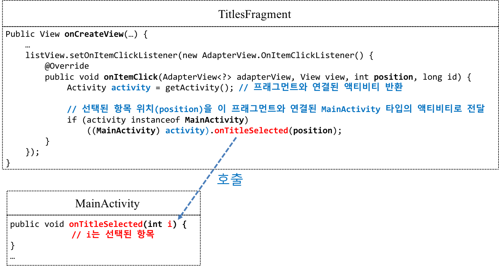
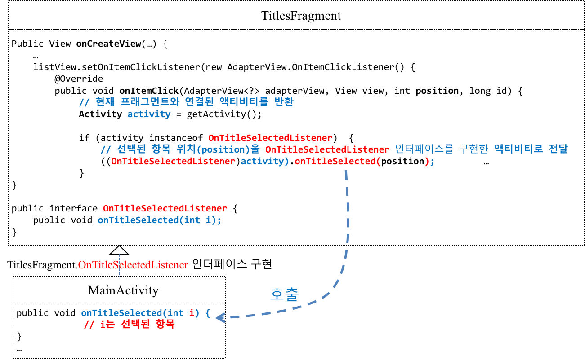
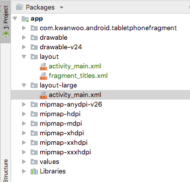
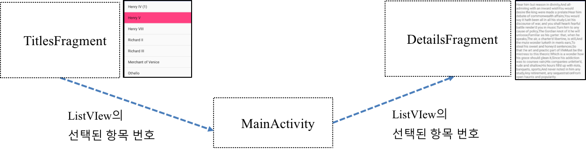
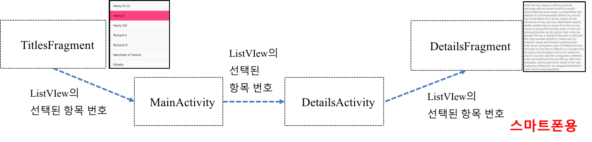

- 액티비티와 분리되어 독립적으로 동작할 수 없음
여러 개의 프래그먼트를 하나의 액티비티에 조합하여 창이 여러 개인 UI를 구축할 수 있으며, 하나의 프래그먼트를 여러 액티비티에서 재사용할 수 있슴

여러 개의 프래그먼트를 하나의 액티비티에 조합하여 창이 여러 개인 UI를 구축할 수 있으며, 하나의 프래그먼트를 여러 액티비티에서 재사용할 수 있슴
(출처: https://24getmenot7.tistory.com/105)

액티비티를 만들 때와 비슷하게, 하나의 자바 소스 파일과 하나의 XML 레이아웃로 정의
자바 소스 파일 생성
예제
public static class FirstFragment extends Fragment {
@Override
public View onCreateView(LayoutInflater inflater, ViewGroup container,
Bundle savedInstanceState) {
// Inflate the layout for this fragment
return inflater.inflate(R.layout.fragment_first, container, false);
}
}XML 레이아웃 생성
예제
<?xml version="1.0" encoding="utf-8"?>
<LinearLayout xmlns:android="http://schemas.android.com/apk/res/android"
android:layout_width="match_parent"
android:layout_height="match_parent"
android:orientation="vertical">
<TextView
android:layout_width="wrap_content"
android:layout_height="wrap_content"
android:text="Hello World!" />
<fragment
android:name="com.kwanwoo.android.fragmentbasic.FirstFragment"
android:layout_width="match_parent"
android:layout_height="match_parent"
android:id="@+id/fragment"
/>
</LinearLayout>프래그먼트 매니저(FragmentManager)는 프래그먼트를 다루는 작업을 해주는 객체로서 다음 두 가지 방법중에 하나로 얻어온다.
FragmentTransaction은 프래그먼트를 추가, 삭제 또는 교체 등의 작업 수행 중에 오류가 발생하면 다시 원래 상태로 되돌릴 수 있도록해주는 기능을 구현한 클래스
예제
FragmentManager fragmentManager = getSupportFragmentManager();
FragmentTransaction fragmentTransaction = fragmentManager.beginTransaction();
fragmentTransaction.add(R.id.fragment_container, new FirstFragment());
fragmentTransaction.commit();
위 코드를 아래와같이 작성할 수도 있습니다.
getSupportFragmentManager().beginTransaction().add(R.id.fragment_container, new FirstFragment()).commit();프래그먼트는 액티비티 위에 올라가는 것이므로, 프래그먼트의 수명주기도 액비티티의 수명주기에 종속적입니다. 하지만, 프래그만트만 가질 수 있는 상태 메소드들이 더 추가 되었습니다.


TitlesFragment에서 표시된 ListView의 항목이 선택되었을 때, 해당 항목의 상세정보를 DetailsFragment에 어떻게 전달할 것인가?
따라서, TitlesFragment의 목록에서 선택된 내용을 DetailsFragment로 전달할 때, 프래그먼트가 서로 종속적이지 않고 독립적으로 동작하게 하기 위해서는 아래 그림과 같이, 선택된 항목번호를 MainActivity로 보내고, MainActivity에서 다시 DetailsFragment로 보내는 방법을 취해야 합니다. 이에 대한 구체적인 방법은 이어지는 절에서 자세히 설명합니다.

예제 프로젝트 소스 https://github.com/kwanulee/Android/tree/master/examples/TabletPhoneFragment
ListView의 선택된 항목 번호를 액티비티로 전달하는 방법을 이해한다.

TitlesFragment의 ListView 항목이 선택되었을 때, 선택된 항목 번호를 TitlesFragment와 연결된 MainActivity에 전달하는 방법은?
방법1 : 액티비티에서 직접 구현된 메소드 호출

방법2 : 인터페이스를 구현한 액티비티를 인터페이스로 접근

두 방법의 비교
| 장점 | 단점 | |
|---|---|---|
| 방법1 | 간단한 구조 | 특정 Activity에 종속 |
| 방법2 | 정의된 인터페이스를 구현하는 모든 Activity와 통신 가능 | 다소 복잡한 구조 |
디바이스의 화면이 태블릿과 같이 큰 경우에 작은 크기의 화면과는 다른 화면 구성을 하고자 한다면, res/layout-large 폴더에 MainActivity의 레이아웃 파일과 동일한 이름의 레이아웃 파일을 정의

ListView에서 선택한 항목 번호의 상세정보를 보여주는 DetailsFragment를 구현한다. 
TitlesFragment에서 리스트뷰 항목 선택 번호를 MainActivity로 전달하였으므로, MainActivity에서는 전달받은 항목 선택 번호를 다시 DetailsFragment로 넘긴다.

스마트폰의 경우에는 첫화면(MainActivity)에서 TitlesFragment만 나오고, ListView에 나열된 항목이 선택되면 해당 항목에 대한 상세정보를 표시하는 DetailsFragment를 다른 화면(DetailsActivity)으로 표시한다.
MainActivity는 DetailsActivity에게 리스트뷰의 항목 선택 번호를 인텐트의 Extra를 통해 전달한다.
onTitleSelected() 메소드 수정
public void onTitleSelected(int i) {
if (getResources().getConfiguration().isLayoutSizeAtLeast(Configuration.SCREENLAYOUT_SIZE_LARGE)) {
DetailsFragment detailsFragment = new DetailsFragment();
detailsFragment.setSelection(i);
getSupportFragmentManager().beginTransaction().replace(R.id.details, detailsFragment).commit();
} else { // 화면 크기가 작은 경우
Intent intent = new Intent(this, DetailsActivity.class);
intent.putExtra("index", i);
startActivity(intent);
}
}DetailsActivity는 MainActivity로부터 전달받은 리스트뷰의 항목 선택 번호를 새로이 생성된 DetailsFragment에 전달하고 새로이 생성된 DetailsFragment 객체를 기존 것과 교체
activity_details.xml
DetailsFragment를 포함할 컨테이너로 FrameLayout을 정의 (id는 details로 설정됨)
<?xml version="1.0" encoding="utf-8"?>
<LinearLayout xmlns:android="http://schemas.android.com/apk/res/android"
android:layout_width="match_parent"
android:layout_height="match_parent"
android:orientation="vertical">
<FrameLayout
android:id="@+id/details"
android:layout_width="match_parent"
android:layout_height="match_parent" />
</LinearLayout>DetailsActivity.java
public class DetailsActivity extends AppCompatActivity {
@Override
protected void onCreate(Bundle savedInstanceState) {
super.onCreate(savedInstanceState);
setContentView(R.layout.activity_details);
DetailsFragment details = new DetailsFragment();
// 액티비티로 전달된 인텐트의 Extra에서 이름이 "index"인 int형 값을 뽑아와서 새로이 생성된 DetailsFragment 객체에 전달
details.setSelection(getIntent().getIntExtra("index",-1));
// 새로이 생성된 DetailsFragment 객체를 기존 것과 교체
getSupportFragmentManager().beginTransaction().replace(R.id.details, details).commit();
}
}